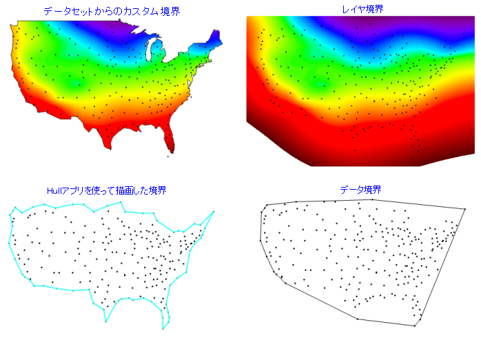
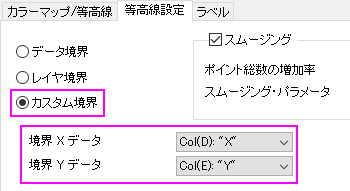

FAQ-1051 等高線図に境界を追加するには、どのようにしたら良いでしょうか？
add-boundary-contour-plot
最終更新日：2020/03/29
ワークシートのXYZデータから作成した等高線図に境界を追加する方法は複数あります。作図の詳細の等高線設定タブには3つのオプションがあります。
- グラフ上でダブルクリックして作図の詳細を開き、等高線設定タブを開きます。
-
- カスタム境界：最もよく使われるオプションです。カスタム境界を定義するXY列データを用意します。
- データ境界： このオプションは、データポイントの周囲に凸包を描くことによって境界を作成します。
- レイヤ境界： このオプションは、レイヤ枠と一致する境界を作成します （表示：表示様式：レイヤ枠）。

その他のオプションとして、無料のConcave Hull アプリを使用してデータポイントの周囲に凹包を描くこともできます。
- これからアプリをインストールする場合は、F10キーを押してアプリセンターを開きます。
- 検索タブでConcaveと検索します。
- Concave Hullアプリをインストールします。
このアプリは入力XYを取得してConcave Hull XnとConcave Hull Ynを出力します。このXYデータを使用して、上記のようにカスタム境界を定義します。
- 
キーワード:凹包, 凸包, カスタム境界, データ境界, レイヤ境界, i補間, 等高線設定